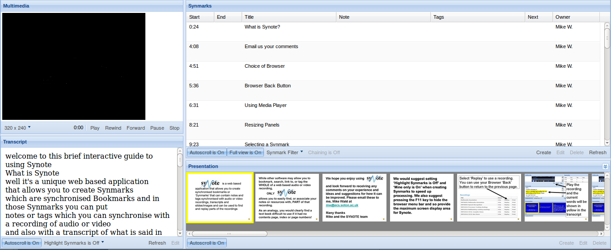

Videogular Questions
Created by GDP Group 12.
What is our project?
We are creating a framework that aims to:
- Make, view and analyse quizzes and polls in videos
- Be accessible
- Be a research tool for education styles
- Be easily integrated into the new version of Synote
Synote

Why?
- A new version of Synote is planned
- New opportunities for Synote
- After lecture review
- Live in Lectures
- MOOCs
What are we actually making?
- Accessibility fixes for Videogular
-
Videogular Plugins
- Questions
- Cuepoints
- Analytics
- Heatmap
- Authoring Tool
- Example Implementations
- Analytics server
- Results Server
- Demonstration website for all of the above
Demo
Here
Demo
Demo